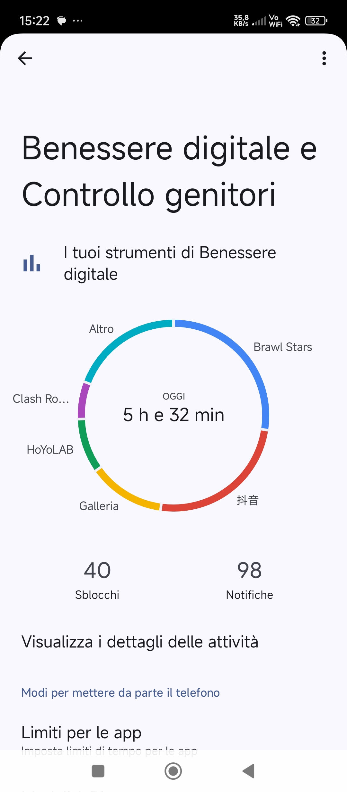

Vai all'indice
Vai al capitolo 5
Naviga all'interno del CAPITOLO 6...
Tecnologia Nemica
Cosa posso fare per difendermi
Legge sulla Privacy
Informatica amica
Tecnologia nemica
Il mio tempo di utilizzo del cellulare e della rete è riassunto dall'immagine qui in basso. La maggior parte del tempo la trascorro ad ascoltare musica, guardare video e giocare. Dopo queste attività, quello che faccio di più è chattare.

Le principali minacce della rete sono le seguenti:
Cyberbullismo: Il cyberbullismo è una forma di bullismo che avviene online, attraverso l'uso di tecnologie digitali come internet, social media, e-mail e messaggistica istantanea. Si tratta di azioni ripetitive e aggressive che mirano a intimidire, molestare, umiliare o danneggiare la reputazione di una persona
Fake news: Le fake news o bufale in italiano sono notizie false che riguardano fatti o eventi create ad arte per diffondere disinformazione.
Phishing: Il phishing è un tentativo online di rubare informazioni sensibili, come password, numeri di carte di credito o dati bancari, fingendo di essere una fonte affidabile, come una banca o un negozio online. Gli attacchi di phishing utilizzano spesso email, messaggi di testo o siti web falsi per indurre le persone a rivelare le loro informazioni.
Vishing: Il vishing, o voice phishing, è una forma di truffa che utilizza chiamate telefoniche per ottenere informazioni personali, spesso sensibili come dati bancari, da vittime ingannate. Gli aggressori si spacciano per entità affidabili, come banche o istituzioni governative, per convincere le vittime a fornire i dati richiesti.
Pretexting: Il "pretexting" è una tecnica di ingegneria sociale in cui un aggressore crea uno scenario fittizio, o "pretesto", per indurre la vittima a rivelare informazioni personali, fornire accesso a sistemi protetti o compiere azioni che normalmente non intraprenderebbe. In sostanza, si tratta di una forma di truffa che sfrutta la fiducia della vittima per ottenere vantaggi.
Scareware: Lo scareware è un tipo di malware che utilizza l'ingegneria sociale per spaventare gli utenti e indurli a compiere azioni dannose, come scaricare software dannoso o pagare per servizi inutili. Funziona creando un senso di urgenza e paura, spesso attraverso messaggi che suggeriscono che il computer è stato infettato o che sono presenti problemi di sicurezza.
Baiting:Il baiting è una tecnica di social engineering che, sfruttando la curiosità delle persone, consente ai criminal hacker di sferrare un attacco verso un’azienda usando un dispositivo di memorizzazione infetto, come ad esempio una chiavetta USB “abbandonata” in posti strategici.
Truffa del CEO:La truffa del Capo (truffa del Presidente o truffa del CEO - Chief Executive Officer) si verifica quando un Dirigente o un dipendente autorizzato a effettuare pagamenti è spinto con l'inganno a pagare una fattura falsa o a effettuare un trasferimento non autorizzato di denaro dal conto aziendale.
Smishing:Lo Smishing è una forma di phishing che utilizza SMS o messaggi di testo per indurre le persone a fornire informazioni personali, spesso con l'intento di estorcere denaro o commettere altre frodi. L'attacco, che unisce SMS e phishing, si basa sull'inganno della vittima, che viene indotta a cliccare su un link o a fornire dati personali in un messaggio di testo apparentemente legittimo.
La dipendenza da videogiochi, definita "Gaming Disorder" dall'OMS, e l'uso compulsivo dei social media sono due fenomeni che possono causare problemi significativi nella vita quotidiana, come l'isolamento sociale e problemi di salute. La dipendenza da videogiochi si manifesta con una perdita di controllo sul tempo di gioco, la priorità al gioco rispetto ad altri impegni e la continuazione del gioco nonostante le conseguenze negative. L'uso compulsivo dei social media, invece, può portare a disturbi psicologici, come ansia e depressione, e a un'alterazione del ritmo sonno-veglia.
La dipendenza dai social media è una forma di dipendenza comportamentale, non attualmente riconosciuta come diagnosi ufficiale nel Manuale Diagnostico e Statistico dei Disturbi Mentali DMS-5, in cui è presente un uso eccessivo e incontrollato delle piattaforme digitali (come Instagram, TikTok, Facebook, X/Twitter, YouTube, ecc.). Questa dipendenza può compromettere il benessere psicologico, le relazioni sociali, interpersonali e il funzionamento quotidiano della persona.
Quando parliamo di dipendenza dai social media, non intendiamo “passare troppo tempo online”, ma una perdita del controllo del loro utilizzo che può portare a sintomi simili a quelli riscontrati in altre dipendenze come: desiderio intenso (craving), astinenza (irritabilità, ansia quando non si può accedere), tolleranza (bisogno di aumentare il tempo online per sentirsi soddisfatti), fino alla compromissione di vita personale, lavorativa o scolastica.
Studi recenti evidenziano che l’uso eccessivo e compulsivo delle piattaforme social può essere associato a disturbi psicologici significativi, come ansia, depressione, stress e disturbi del sonno.
Un virus informatico è un programma maligno progettato per diffondersi da un sistema all'altro senza il consenso dell'utente. Si diffonde attaccandosi a file e programmi, replicandosi e infettando altri sistemi. Può essere trasmesso attraverso varie modalità, tra cui download di file infetti, e-mail con allegati malevoli, supporti rimovibili e applicazioni di messaggistica.
Un attacco denial-of-service o attacco DoSindica un malfunzionamento dovuto a un attacco informatico in cui si fanno esaurire deliberatamente le risorse di un sistema informatico che fornisce un servizio ai client, ad esempio un sito web su un server web, fino a renderlo non più in grado di erogare il servizio ai client richiedenti.
Cosa posso fare per difendermi
Per proteggerti dai pericoli della rete, installa un antivirus e un firewall, utilizza password complesse e aggiorna regolarmente il software. Evita le reti Wi-Fi pubbliche per transazioni sensibili, fai attenzione ai link sospetti nelle e-mail e usa la navigazione sicura quando possibile.
Inoltre:
Installare antivirus e firewall: Questi strumenti sono fondamentali per proteggere il tuo dispositivo da virus, malware e attacchi informatici.
Password complesse: Scegli password lunghe, complesse e diverse per ogni sito o servizio online per evitare che vengano compromesse.
Aggiornare il software: Aggiornare regolarmente il sistema operativo e il software aiuta a patchare vulnerabilità di sicurezza.
Evitare reti Wi-Fi pubbliche per transazioni sensibili: Le reti Wi-Fi pubbliche non sono sicure e possono essere intercettate, quindi evita di effettuare operazioni sensibili come transazioni bancarie o accesso a account online.
Attenzione ai link nelle e-mail: Fai attenzione ai link sospetti nelle e-mail, soprattutto se ti chiedono di inserire dati personali o bancari. Verifica sempre l'autorevolezza dell'e-mail prima di cliccare.
Navigazione sicura: Utilizza la navigazione sicura del browser (ad esempio, Navigazione sicura di Google Chrome) per proteggerti da siti web pericolosi.
Uso di VPN (Virtual Private Network):Per una maggiore sicurezza, specialmente quando utilizzi reti Wi-Fi pubbliche, considera l'uso di una VPN, che critta il traffico di rete e lo rende più sicuro.
Autenticazione a due fattori: Se disponibile, abilita l'autenticazione a due fattori per i tuoi account online. Questo aggiunge un ulteriore livello di sicurezza richiedendo una verifica aggiuntiva oltre alla password.
Backup dei dati: Effettua regolarmente un backup dei tuoi dati importanti per poterli ripristinare in caso di perdita o attacco.
Educazione alla sicurezza informatica:Resta informato sui rischi online e sulle migliori pratiche per la sicurezza informatica.
Legge sulla Privacy
In Italia, la principale legge sulla privacy informatica è il Codice in materia di protezione dei dati personali, noto anche come "Codice Privacy". Questo decreto legislativo (D.Lgs. 196/2003) ha sostituito la precedente legge 675/1996. Oltre a questo, esiste anche il Regolamento UE 2016/679 (GDPR), che stabilisce regole più ampie e rigide in materia di protezione dei dati personali per tutti gli Stati membri dell'Unione Europea.
Informatica amica
L'informatica offre numerosi vantaggi in diversi ambiti, dalla comunicazione alla produttività, dall'accesso alle informazioni alla formazione, e non solo. In sintesi, l'informatica facilita la vita in vari modi, rendendo le persone più efficienti, informate e collegate.
In sintesi, ecco alcuni degli aspetti positivi dell'informatica:
Comunicazione e Connessione:L'informatica ha rivoluzionato la comunicazione, consentendo interazioni rapide e semplici attraverso email, chat, social media e videoconferenze.
Accesso alle Informazioni:
Internet e le risorse digitali offrono un accesso illimitato a un vasto archivio di conoscenze, rendendo facile la ricerca e la documentazione su qualsiasi argomento.
Formazione e Apprendimento:
L'informatica permette di accedere a una vasta gamma di corsi online, tutorial e risorse educative, facilitando l'apprendimento e lo sviluppo di nuove competenze.
Produzione e Creatività:
I software informatici offrono strumenti potenti per la creazione di documenti, immagini, grafici e contenuti multimediali.
Organizzazione e Gestione:
L'informatica facilita l'organizzazione di documenti, la gestione di dati, il planning di progetti e la gestione di attività quotidiane.
Efficienza e Risparmio di Tempo:
L'automatizzazione di compiti, l'uso di software di gestione e la comunicazione online consentono un notevole risparmio di tempo ed energie.
Innovazione e Crescita:
L'informatica è alla base di molte innovazioni tecnologiche, che a loro volta spingono la crescita economica e sociale.
Opportunità di Lavoro: L'informatica offre numerose opportunità di lavoro in diversi settori, con prospettive di carriera in costante crescita.
Intrattenimento e Divertimento:
L'informatica offre una vasta gamma di opzioni di intrattenimento, dai videogiochi alla visione di film in streaming, ai social media.
Socializzazione e Rapporti Sociali:
Le piattaforme online e i social media facilitano la connessione con amici, familiari e colleghi, mantenendo attivi i rapporti sociali.
Inoltre, l'informatica è un fattore chiave in diversi contesti:
Lavoro: L'uso di computer e software è essenziale per la maggior parte dei lavori, rendendo le persone più produttive e efficienti.
Aziende:
L'informatica aiuta le aziende a gestire i dati, automatizzare i processi, migliorare la comunicazione e aumentare la produttività.
Scuola:
L'informatica è un importante strumento di apprendimento, che aiuta gli studenti a imparare in modo più coinvolgente e interattivo.
Servizi Pubblici:
L'informatica permette ai cittadini di accedere a servizi online, come la richiesta di informazioni, il pagamento di bollette e la gestione di documenti.
In conclusione, l'informatica è un'importante risorsa per la vita di tutti, che facilita l'accesso a informazioni, permette una comunicazione più efficiente, supporta l'apprendimento e la crescita professionale, e offre nuove opportunità di intrattenimento e socializzazione.